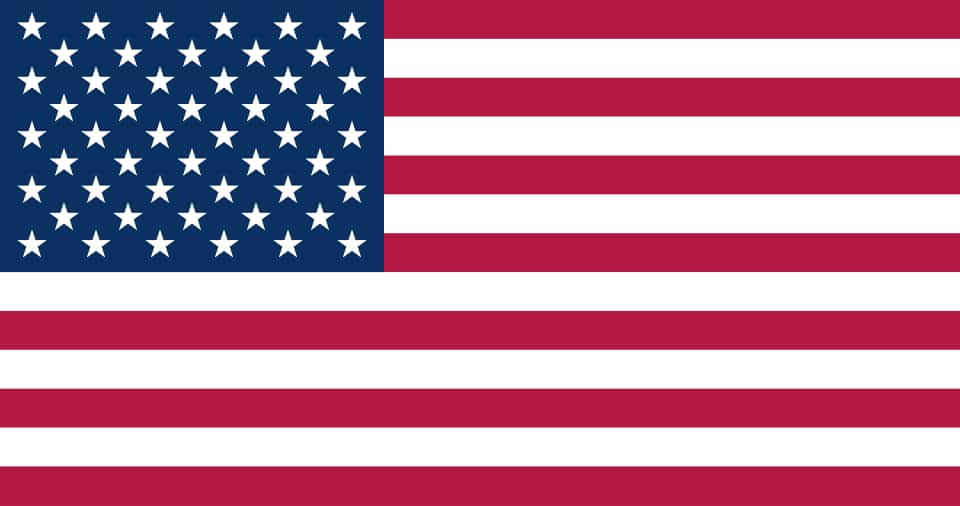

About Me
Hello everyone. I am Jesús Figueroa. I am from Venezuela 🇻🇪. I love my family, my wife Katherine and my daughter Sahori. I enjoy spend time with these beautiful women. They are my most precious treasure. I also love learning a lot. What I like most is learning languages. Currently I speak Spanish 🇪🇸, English 🇺🇸, Portuguese 🇧🇷, Italian 🇮🇹, and I am learning German 🇩🇪. In my free time I like to play and watch football (soccer), play video games and to sleep. One word that can describe me is: "determination". When I think I can do something, nothing can stop me.
Utah, USA
Utah is a western U.S. state known for its stunning national parks, diverse landscapes, and the Great Salt Lake. It is home to Salt Lake City, the headquarters of The Church of Jesus Christ of Latter-day Saints.
